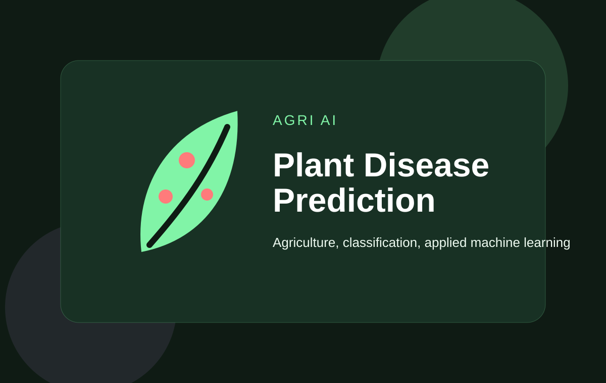

Role
ML Web App Developer
Applied machine learning web app designed for disease prediction use cases in agriculture-focused AI demonstrations.

ML Web App Developer
Prediction app build
Working prediction interface for agriculture-oriented AI demonstrations.
This project brings machine learning into an agriculture context through a web application focused on disease prediction. It works as a strong applied AI showcase for problem-specific prediction tasks.